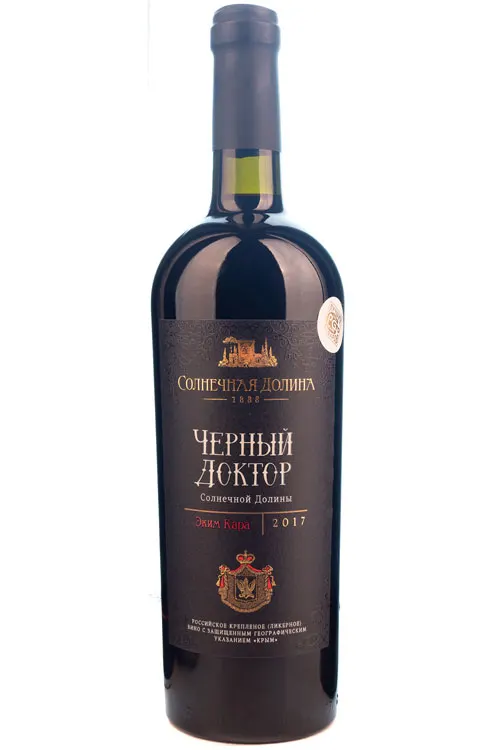
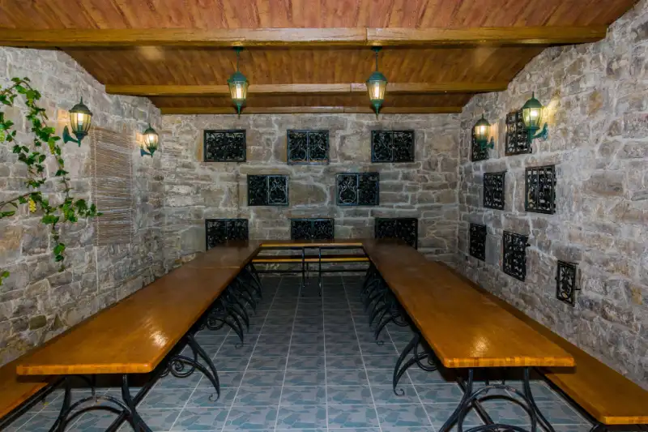

Чёрный
Доктор
Солнечной Долины, урожай 2017 года. Российское креплёное (ликёрное) вино с защищённым географическим указанием «Крым», выдержанное красное.
- Бутылка №
- 0417
- Партия
- 17/04
- Розлив
- 06.04.21
Отсканировали у полки — вот короткий путь
Номер найденПартия 17/04 разлита 6 апреля 2021 года на заводе выдержки «Архадерессе», с. Богатовка. Тираж партии — 4 800 бутылок.
- Номер бутылки
- № 0417 / 4800
- Год урожая
- 2017
- Дата розлива
- 06.04.2021
- Подвал выдержки
- № 1, бут № 14
Паспорт показывает, что говорит о себе сама бутылка. Сверьте четыре признака подлинной бутылки «Солнечной Долины» — они наносятся на производстве и вместе почти не воспроизводятся в подделке.данные партии — макет
КолпачокПлотный полимерный колпачок с тиснёным гербом и надписью «Архадерессе» по нижнему кольцу; шов ровный, без клея по краю.
Федеральная маркаНаклеена через горлышко, поверх колпачка; при вскрытии рвётся. Номер марки читается сканером «Честного знака».
Номер на контрэтикеткеНомер бутылки и партии выбиты одним оттиском: 0417 / 17/04. Тот же номер вы видите в этом паспорте — иначе бутылка не наша.
Цвет в бокалеГранатовый с рубиновыми бликами и плотной, «тягучей» стенкой. Мутность, бурый край и резкая спиртовая нота — повод не пить.
Паспорт описывает признаки подлинной бутылки и не является гарантией подлинности конкретного экземпляра. Если хотя бы один признак не совпал — напишите нам: office@sunvalley1888.ru, +7 (978) 856-42-42.

- Категория
- Ликёрное выдержанное
- Спирт
- 16 % об.
- Сахар
- 160 г/дм³
- Выдержка
- в дубовых бутах, не менее 3 лет
- Возраст лоз
- свыше 35 лет
- Указание
- ЗГУ «Крым»
- Объём
- 0,75 л
- Цвет
- гранатовый с рубиновыми бликами
Сортовой состав
Три автохтона Солнечной Долины. За пределами этой долины они промышленно не растут: то, что здесь называют «сортовым составом», в мировом каталоге сортов занимает несколько строк — и все они про этот склон.
- Экспозиция
- юго-восток
- Высота
- 150–200 м
- Почва
- глинистый сланец
- До моря
- ≈ 2,5 км
Голицын выбрал эту землю за «оружейный камень» — обломки слоистого песчаника в почве, которые днём копят тепло, а ночью отдают его лозе. Кольцо гор запирает долину: осадков здесь редко больше 200 мм в год, ясных дней — около 300, больше, чем в Ялте и Судаке. Виноградарство тут трудное занятие; именно поэтому вино получается плотным.границы участков — схема
| Месяц и фаза | Ср. t° | Макс. | Осадки, мм |
|---|---|---|---|
| Апрельраспускание почек | 11,4 | 24 | 21 |
| Майрост побегов | 16,8 | 29 | 27 |
| Июньцветение | 22,1 | 33 | 18 |
| Июльзавязь и рост ягоды | 25,6 | 37 | 8 |
| Августверайзон · окрашивание | 26,2 | 39 | 4 |
| Сентябрьнакопление сахара | 20,3 | 31 | 14 |
| Октябрьсбор · 12 октября | 14,7 | 25 | 23 |
- Сумма акт. t°
- 3 940близко к многолетней норме долины
- Осадков за сезон
- 115мм — сухой год даже для этих мест
- Сахаристость
- 27,4% на момент сбора
- Сбор
- 12.Xвручную, в ящики по 12 кг
Август 2017-го был жарче обычного и почти без дождя — ягода осталась мелкой, с толстой кожицей. Отсюда густота этого вина: в сухие годы эким кара даёт меньше сока и больше цвета. Прохладная первая декада октября позволила не спешить со сбором и дождаться, пока кислотность перестанет падать.
Подписаться на новости этого вина
Раз в сезон: как идёт год на Токлук-Сарыне, когда выходит следующая партия «Чёрного Доктора» и где её можно будет купить. Ничего, кроме этого вина и долины.
Готово. Первое письмо придёт после ближайшего сбора.
Или в Telegram12 октября 2017
Ручной сбор
Виноград снят вручную на участке Токлук-Сарын, отсортирован на месте и в тот же день доставлен на переработку — от лозы до пресса меньше часа хода.
октябрь 2017
Брожение на мезге и спиртование
Настой на кожице даёт цвет и танин; брожение останавливают спиртованием, оставляя в вине природный сахар винограда — так делают креплёные вина Солнечной Долины со времён Голицына.
2018 — 2021
Подвал № 1, бут № 14
Три с лишним года в дубовых бутах старинного подвала «Архадерессе», заложенного в 1888 году. Круглый год +12…+14 °C, без кондиционеров: температуру держит сама гора.
6 апреля 2021
Розлив, партия 17/04
4 800 бутылок. Ваша получила номер 0417 — он выбит на контрэтикетке и записан в реестр розлива.
сегодня
Пять лет покоя в бутылке
Ликёрные вина этого типа живут десятилетиями и медленно набирают тона сухофруктов и кожи. Открывать её не обязательно в этом году — но и ждать особого повода не нужно: вино готово.
Открытую бутылку креплёного вина можно держать закупоренной в холодильнике до трёх недель — в отличие от сухого, оно почти не теряет за это время.
Работаете в зале? В «Кабинете сомелье» — готовый текст для винной карты, спецификация и подача этой позиции.
Кабинет сомелье →Понравилось — где взять ещё? Вино не продаётся на сайте: только фирменные магазины винодельни и лицензированные партнёры. Показать ближайшие из 37 точек — нужен доступ к геолокации.
Где купитьАромат сложный и многогранный, с преобладающими тонами сухофруктов и джемов: чернослив, шоколад, замша, дополненные оттенками ванили, кизила, тёрна и пряностей. Во вкусе — шелковистые танины и долгое послевкусие с оттенками сушёной груши, молочных сливок и сафьяна.
Эким кара — крымский автохтон, известный в окрестностях старого Токлука (ныне Богатовка) задолго до того, как здесь появилось промышленное виноделие. Название переводят с крымскотатарского как «чёрный доктор»: по преданию, бытовавшему в долине в XIX веке, тёмное густое вино из этого сорта в крестьянских домах держали отдельно от прочих и подавали редко. Предание приводится как исторический факт бытования названия и не является утверждением о свойствах продукта.
Сорт капризен: он поздно созревает, требует суммы активных температур под 4 000 °C и не переносит влажности. За пределами юго-восточного Крыма эким кара промышленно не выращивают — вне этого кольца гор он просто не вызревает. Возраст лоз на участке, с которого собрана эта партия, — свыше 35 лет.
Вино под именем «Чёрный Доктор» выпускается в Солнечной Долине с советских времён и остаётся самым узнаваемым крымским автохтонным вином. Именно поэтому у него есть подделки — и именно поэтому у каждой бутылки теперь есть номер и эта страница.
- Сорт
- Эким кара
- Родина
- Токлук, Крым
- Возраст лоз
- 35+ лет
- Растёт
- только здесь

Подвал заложен в 1888 году: Голицын убедил князя Горчакова купить Токлукское имение и построил здесь первый в Российской империи завод выдержки десертных и крепких вин.
Девять лет назад в этих галереях было ровно столько же градусов, сколько сейчас: +12…+14 °C круглый год, без единого кондиционера. Ваша бутылка провела здесь три года в дубовом буте, в темноте и тишине, пока над подвалом менялись сезоны.
В подвалы можно спуститься — они работают как музей и дегустационный зал. Ниже — программы, в которых наливают то самое вино, что у вас в руках.
Спуститься туда, где я выдерживалось
от 1 450 ₽ежедневно с 10:00 · с. Миндальное
Дегустационный комплекс «Архадерессе», с. Миндальное, ул. Миндальная, 8А. Заявка ни к чему не обязывает: менеджер перезвонит и подтвердит время.
Стоимость визита и дегустации, не винаЦены ниже — за экскурсию с дегустацией, на человека. Вино на сайте не продаётся и не доставляется.